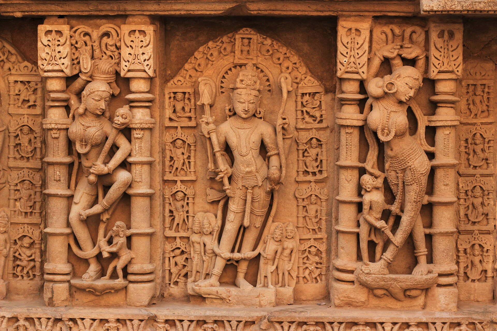
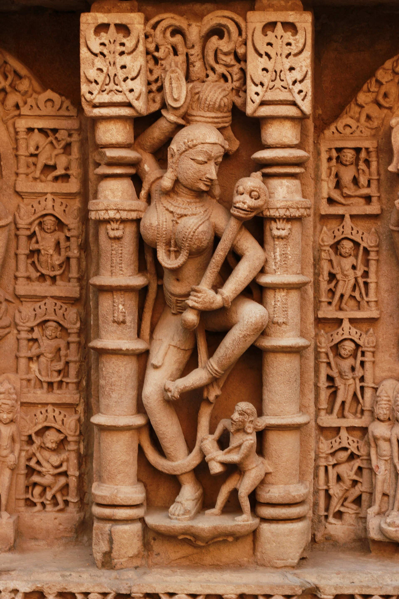
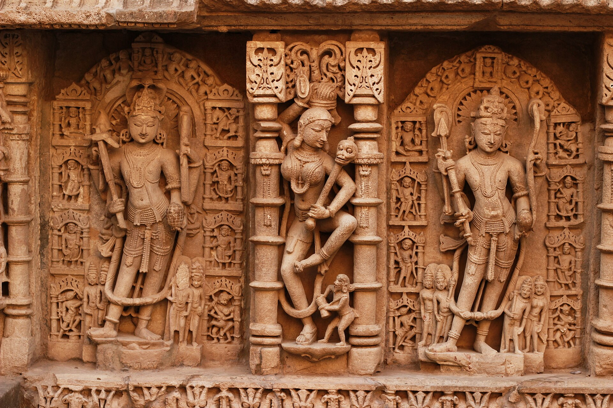
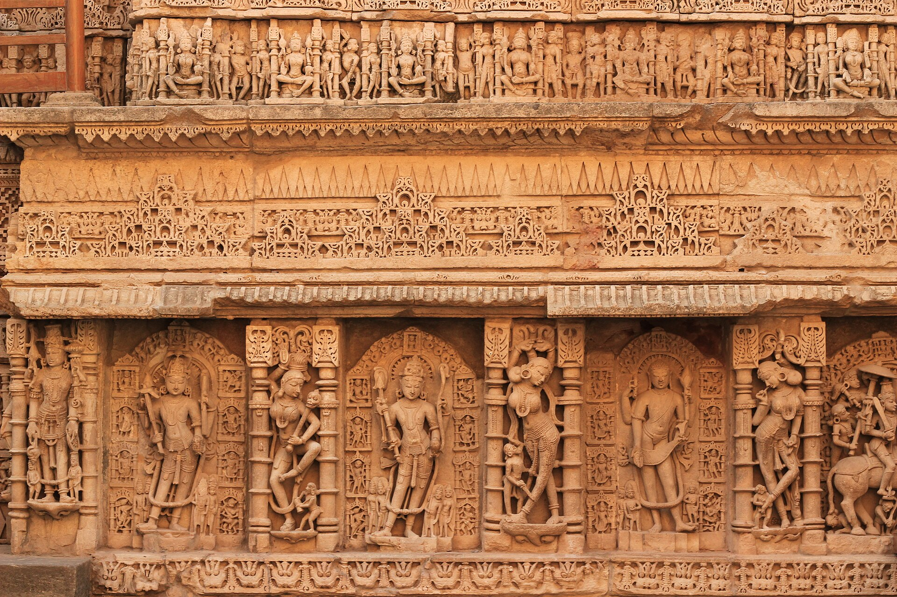
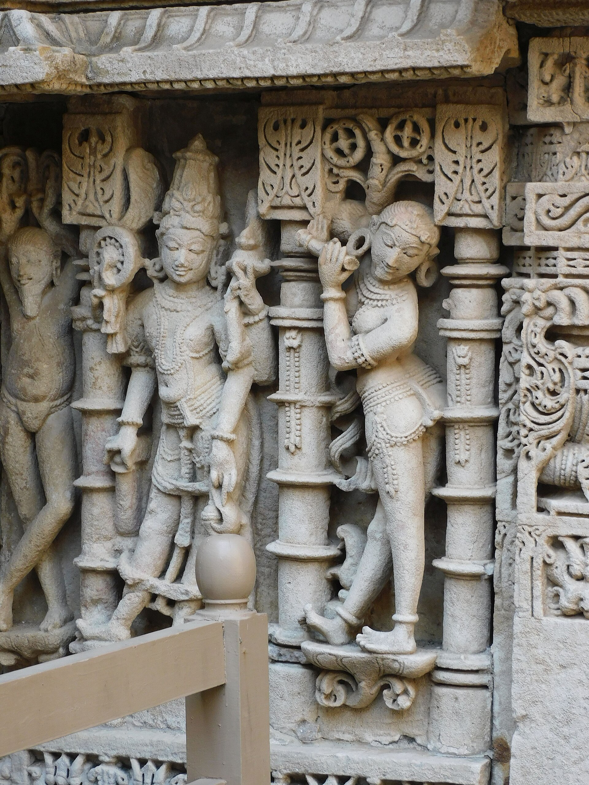
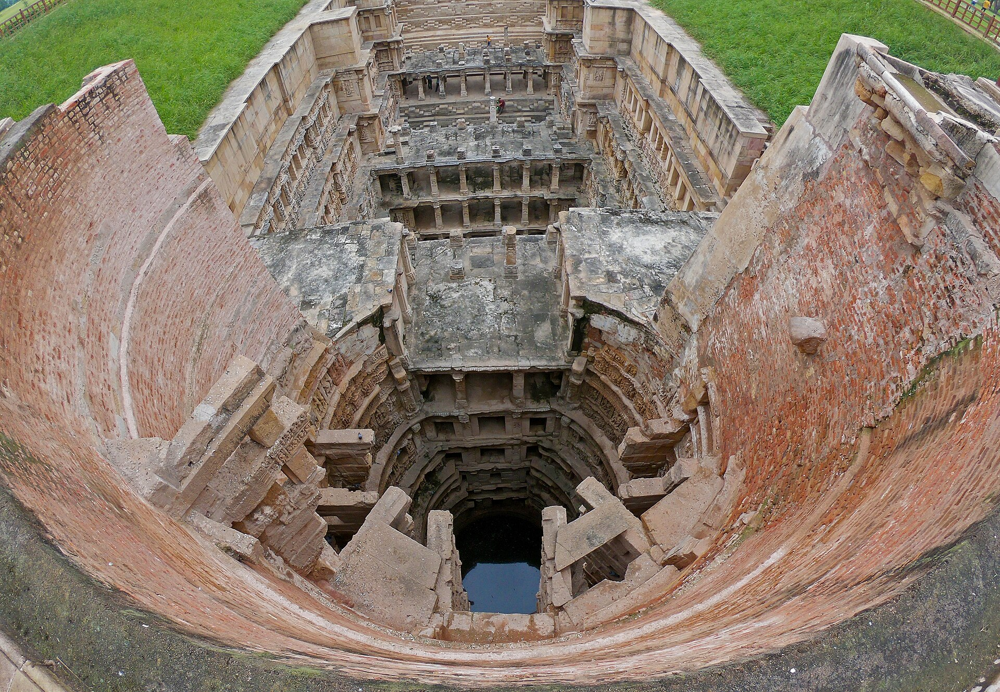

'/%3E%3Crect width='1400' height='651' rx='28' fill='url(%23p)'/%3E%3Crect x='30' y='30' width='1340' height='591' rx='18' fill='none' stroke='%23ffffff' stroke-opacity='.55' stroke-width='4'/%3E%3Ctext x='90' y='250' font-family='Fira Sans' font-weight='800' font-size='190' fill='%234B2E7A'%3E%E2%82%B9100%3C/text%3E%3Ctext x='96' y='340' font-family='Fira Sans' font-weight='700' font-size='54' fill='%234B2E7A' letter-spacing='10'%3EFLIP IT OVER%3C/text%3E%3Ccircle cx='1080' cy='325' r='190' fill='%23ffffff' fill-opacity='.22'/%3E%3Ctext x='1080' y='365' text-anchor='middle' font-family='Fira Sans' font-weight='800' font-size='150' fill='%234B2E7A'%3E%E2%86%BB%3C/text%3E%3C/svg%3E)


નોટ પલટાવો!
What's on the back was buried for centuries
પાટણ, ગુજરાત · Patan, Gujarat
રાણકી વાવ
Commissioned c. 1063 CE by Queen Udayamati
એક રાણીનું સ્મારક · A queen's memorial
રાજાની યાદમાં, રાણીએ બંધાવી
Usually it's the other way round
ઊલટું!

0માળ નીચે
storeys down, sculpture on every wall

કાંપ નીચે ગાયબ
The whole stepwell vanished under silt
Illustrative reconstruction (AI), not a photograph

દટાઈને જ સચવાઈ!
1063
બંધાઈ
…
દટાઈ
1940s
ફરી મળી
2014
UNESCO

તમે રાણકી વાવ જોઈ છે?
Been there? Tell us below 👇
@otlo.gujarat · ગુજરાતની વાતો, ઓટલા પર